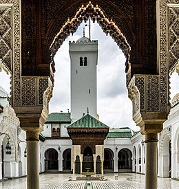
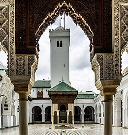

Biographie de Fatima el Fihria :
Fatima el Fihriya, surnommée Oum al Banine est la fondatrice de la mosquée el-Qaraouiyyîn, plus ancienne université du monde encore en activité.
Née au 9e siècle, Fatima est originaire de Kairouan en Tunisie. Très jeune, elle émigre avec sa famille à Fès, au nord du Maroc. Son père, Muhammad Al-Fihri, est un riche commerçant.
Lorsque sa sœur Maryam et elle héritent de sa fortune, elles décident de dépenser leur héritage au service de la communauté pour honorer la mémoire de leur père.
En 859, Maryam dirige la construction de la Mosquée des Andalous, tandis que Fatima el Fihriya entreprend d’agrandir la mosquée el-Qaraouiyyîn, qui sera la plus grande d’Afrique du nord. Elle fait extraire tous les matériaux de construction d’un terrain voisin et fait le vœu de jeûner tous les jours jusqu’à la fin des travaux.
Au sein du pôle religieux et culturel de Fès, la mosquée el-Qaraouiyyîn fait aussi fonction d’université et devient la première de l’histoire. Elle enseigne entre autres la religion, la grammaire, la médecine, les mathématiques, et produit de grands penseurs, théologiens, philosophes ou astronomes.
Fatima el Fihriya meurt en 880. L’Université Al Quaraouiyine, qu’elle a fondée, est encore en activité aujourd’hui.
 
